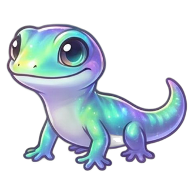
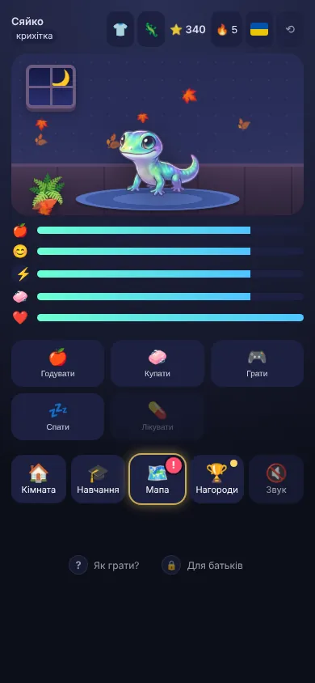
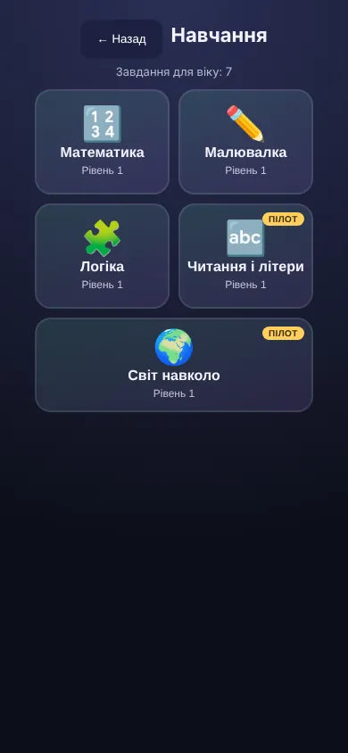
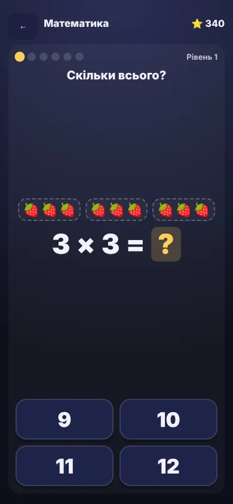
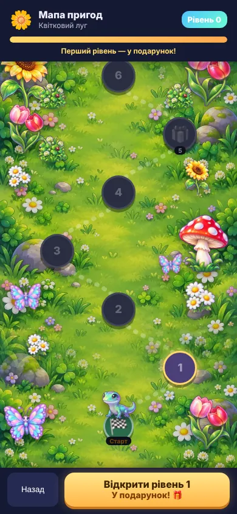
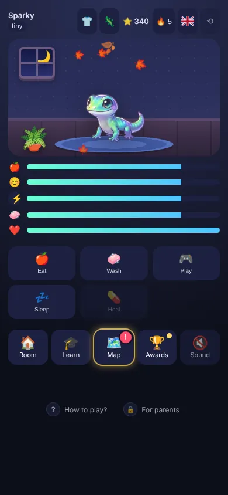
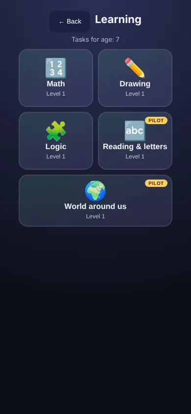
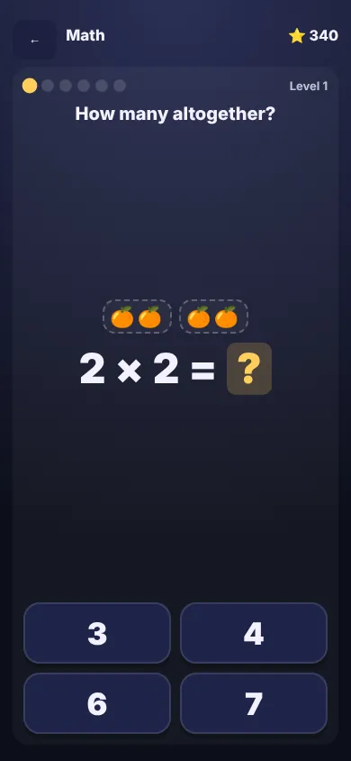
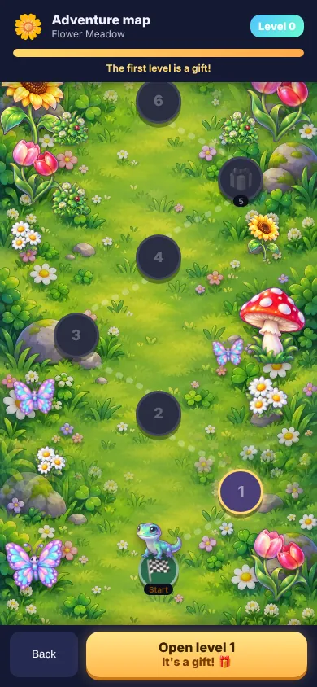

ototo
Твій перший друг-улюбленець, з яким весело вчитися рахувати, малювати, читати й пізнавати світ. Your first pet friend who makes it fun to learn counting, drawing, reading and the world around you.
Знайомтеся: райдужний геко Сяйко. Його треба годувати, мити, вкладати спати — а він за це грає з тобою. Meet Sparky, the rainbow gecko. Feed him, wash him, put him to bed — and he will play with you in return.
ГратиPlay- БезкоштовноFree
- Без рекламиNo ads
- Від 3 роківAge 3+
- Працює без інтернетуWorks offline
Що є в гріWhat’s inside
Віртуальний улюбленецьA virtual pet
Годуй, мий, вкладай спати й лікуй. Заробляй зірки в міні-іграх, відкривай нових друзів, одяг і прикраси для кімнати.
Feed, wash, put to bed and look after your pet. Earn stars in mini-games and unlock new friends, outfits and room decor.
5 навчальних ігор5 learning games
Математика, Малювалка, Логіка, Читання і літери, Світ навколо. Завдання підлаштовуються під вік.
Math, Drawing, Logic, Reading & letters, The world around us. Tasks adapt to the player’s age.
Мапа пригодAdventure map
Квітковий луг, ліс, море та інші краї: відкривай рівні за зірки, які заробив у грі.
Flower meadow, forest, sea and more: open new levels with the stars you earned.
18 мов18 languages
Українська, English, Polski, Deutsch, Română, Қазақша, Français, Español, Italiano, Português, Nederlands, Čeština, Ελληνικά, Svenska, Magyar, Български, Oʻzbekcha, Azərbaycanca.
Від 3 років — і для дорослихAge 3+ — and for grown-ups too
Вік обирається на старті (від 3 до 21+): від нього залежить складність завдань.
Pick an age at the start (3 to 21+): it sets how hard the tasks are.
Працює без інтернетуWorks offline
Після першого запуску гра зберігає свої файли на пристрої й працює навіть у літаку.
After the first launch the game keeps its files on the device and works even on a plane.
Без рекламиNo ads
Жодних банерів, рекламних роликів і рекламних бібліотек.
No banners, no video ads, no ad libraries.
Жодних даних не збираємоNo data collected
Без акаунтів, чатів і трекерів. Прогрес зберігається лише на самому пристрої.
No accounts, chats or trackers. Progress is stored only on the device itself.
Як це виглядаєScreenshots

Улюбленець 
Навчання 
Математика 
Мапа пригод 
Your pet 
Learning 
Math 
Adventure map
Для батьківFor parents
🔒 Батьківський замок🔒 Parental gate
Налаштування для дорослих і посилання за межі гри відкриваються лише після прикладу на множення, який мала дитина не розв’яже.
Grown-up settings and any link out of the game open only after a multiplication question that a small child can’t solve.
🛡️ Жодних даних🛡️ No data
Гра не збирає й не передає даних про дитину. Вік, ім’я улюбленця і прогрес лежать лише на пристрої; видалити їх можна кнопкою ⟲.
The game does not collect or send any data about your child. Age, pet name and progress stay on the device; the ⟲ button erases them.
🚫 Без реклами й чатів🚫 No ads, no chats
Немає реклами, акаунтів, спілкування з незнайомцями і стороннього стеження.
No ads, no accounts, no talking to strangers and no third-party tracking.